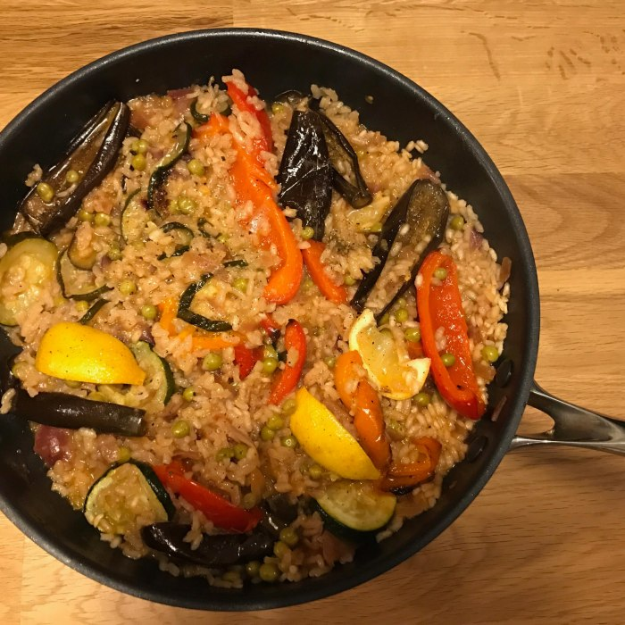

Paella

Description
This traditional Spanish paella is a vibrant and flavorful dish made with saffron-infused rice, a variety of
vegetables, and your choice of protein. Perfect for sharing with family and friends!
Ingredients
- 1 1/2 cups Arborio rice
- 3 cups vegetable broth
- 1/2 tsp saffron threads
- 1 onion, finely chopped
- 2 cloves garlic, minced
- 1 red bell pepper, diced
- 1 cup green beans, trimmed and cut into 1-inch pieces
- 1 cup artichoke hearts, quartered (canned or frozen)
- 1 cup cherry tomatoes, halved
- 1 cup peas (fresh or frozen)
- 1 lemon, cut into wedges
- 2 tbsp olive oil
- 1 tsp smoked paprika
- Salt and pepper to taste
- Your choice of protein (chickpeas, tofu, or tempeh for a vegan option)
Steps
- In a small bowl, soak the saffron threads in 1/4 cup of warm vegetable broth. Set aside.
- Heat olive oil in a large skillet or paella pan over medium heat. Add the chopped onion and garlic, and
sauté until softened, about 5 minutes.
- Add the diced red bell pepper and cook for another 3-4 minutes until slightly tender.
- Add the Arborio rice to the pan and stir to coat the rice with the oil and vegetables. Cook for 2-3
minutes until the rice is lightly toasted.
- Pour in the remaining vegetable broth and the saffron-infused broth. Stir in the smoked paprika, salt,
and pepper. Bring to a boil, then reduce heat to low and simmer uncovered for about 15 minutes, stirring
occasionally.
- Add the green beans, artichoke hearts, cherry tomatoes, peas, and your choice of protein to the pan.
Continue to cook for another 10-15 minutes until the rice is tender and has absorbed most of the liquid.
If needed, add a bit more broth or water to prevent sticking.
- Once the rice is cooked and the vegetables are tender, remove from heat. Cover the pan with a clean
kitchen towel and let it rest for 5 minutes.
- Garnish with lemon wedges before serving. Enjoy your delicious homemade paella!
Home